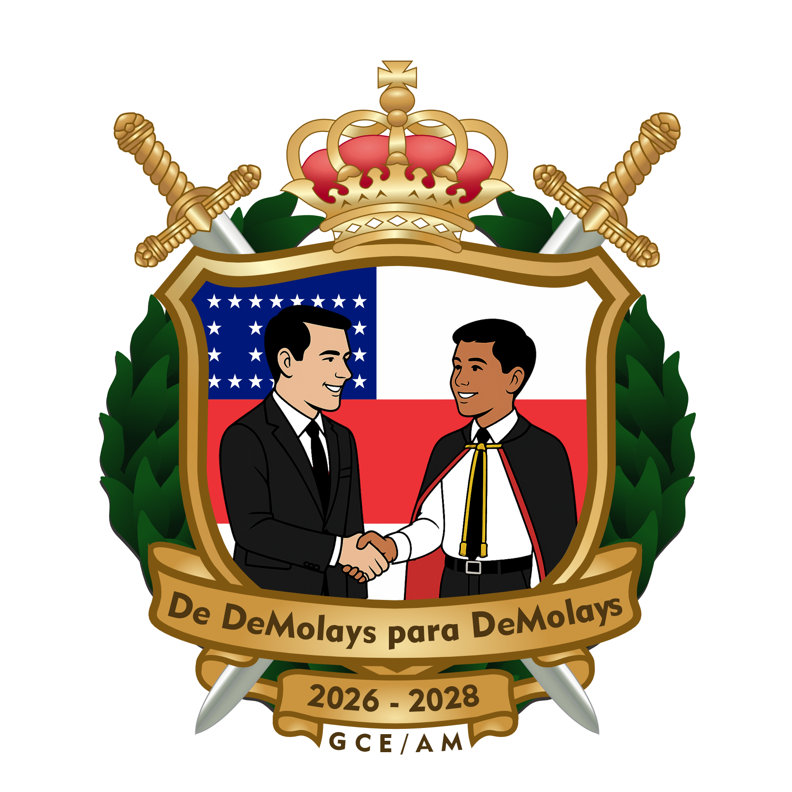

Missão e atuação
O Grande Conselho Estadual supervisiona, orienta e apoia os Capítulos e Organizações Afiliadas no Amazonas. Ele também mantém contato direto com o Supremo Conselho DeMolay Brasil e promove ações de impacto social.
- Supervisionar e orientar os Capítulos e Organizações Afiliadas.
- Promover a criação de novos Capítulos, especialmente em municípios ainda não atendidos.
- Coordenar programas de desenvolvimento de lideranças.
- Organizar eventos estaduais com foco em integração e propósito.
- Manter comunicação ativa com o Supremo Conselho DeMolay Brasil.
- Promover ações de impacto social e comunitário.
- Zelar pelo cumprimento dos princípios e regulamentos DeMolay.
